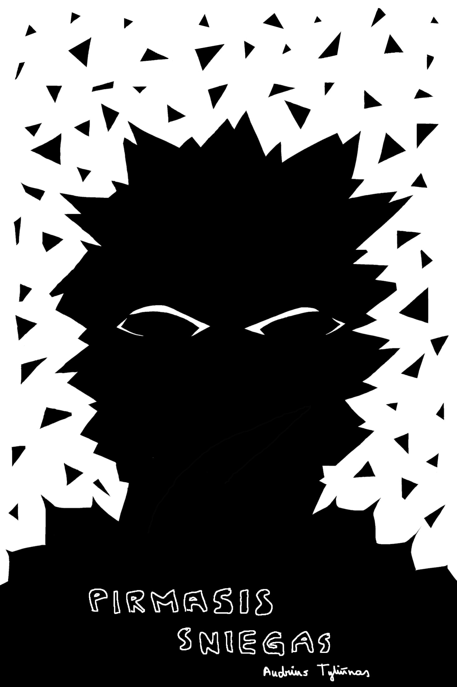
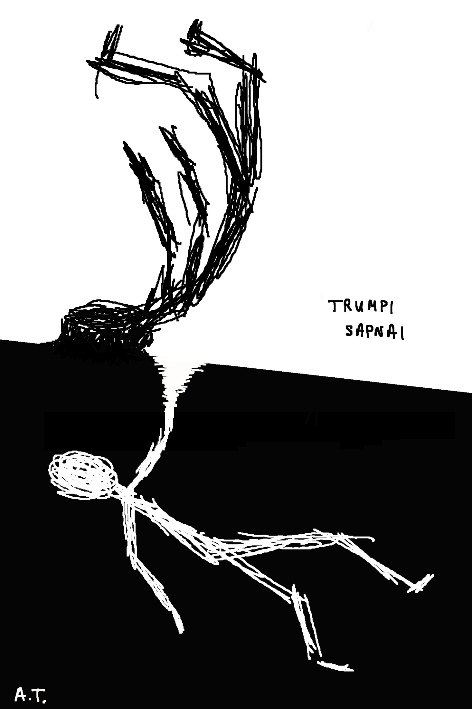
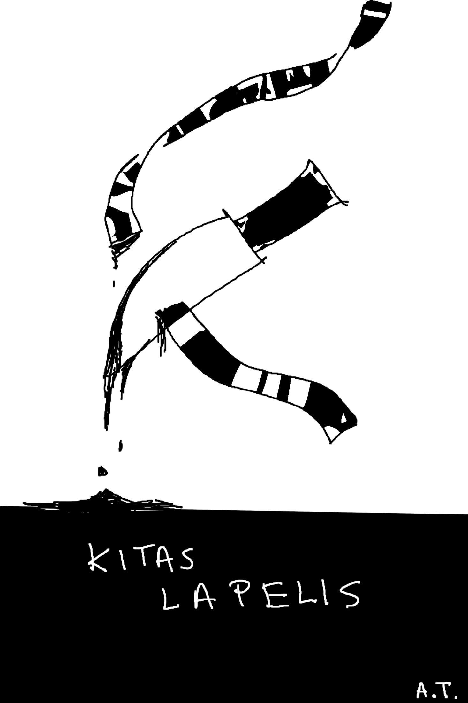
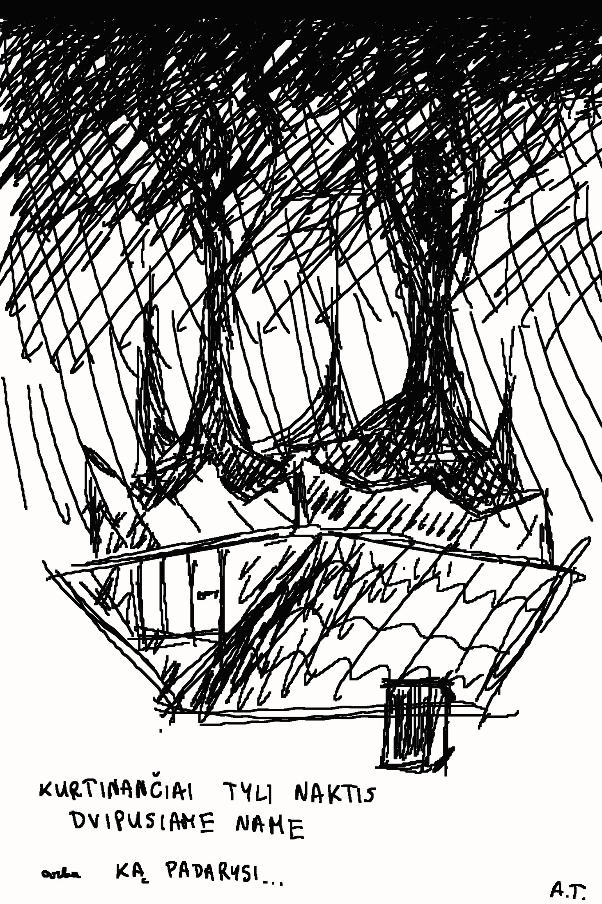

Pirmasis sniegas
Ar galėtum ramiai užmigti žinodamas, kad per toli nuklydęs sapnuose gali niekada nebepabusti? Kokios taisyklės kontroliuoja naktį verdančius vaizdinius? O gal visa tai tėra niekuo neypatingos regimybės, kurioms neverta skirti dėmesio? Dažnas naktimis pasineria į sapnų pasaulį net nesusimąstydamas, leisdamas miegui atpalaiduoti mintis ir išsklaidyti nuovargį. Bet tik ne jis, paauglystėn žengiantis berniukas, sąmoningai tyrinėjantis nežinomybę, einantis pavojingu klaidininko keliu. Į vaizduojamą realistišką peizažą viena po kitos braunasi fantastikos užuominos – sapnuose keičiama erdvė ir laikas, patiriamos neužmirštamos akimirkos, sutinkami kasdienoje matyti žmonės. Tačiau veiksmą iš lėto ima dengti klaikus šydas, pasirodantis neperprantamomis košmarus sėjančiomis pabaisomis ir vienas po kito atsiskleidžiančiais nepažinto pasaulio siaubais.
Kurtinančiai tyli naktis dvipusiame name arba Ką padarysi…
Naujai įsidarbinęs jaunuolis nakčiai įstringa siuvykloje, taip prieš jo akis atsiskleidžia šiurpioji paslaptingojo namo pusė.
Trumpi sapnai
Ką darytum, jei malonaus sapno pabaigoje turėtum galimybę jame likti amžinai? Kas, jei dabartinis tavo gyvenimas tėra sapnas? O jei turėtum galimybę nugalėti košmarus, tačiau tam turėtum paaukoti dalelę savo žmogiškumo?
Kitas lapelis
Vaikiškas žodynas, bandantis aprėpti paaugliškas mintis.
Gauti el. knygą
Parašykite laišką adresu audrius@audriusraso.lt ir gausite el. knygos versiją (PDF, EPUB, MOBI) nemokamai!
Gauti fizinę knygą
Pirmasis knygos tiražas pasibaigė (10 fizinių kopijų), tačiau galite užsirašyti į eilę sekančiam tiražui, parašydami el. laišką adresu audrius@audriusraso.lt (gausite atsakymą kelinti esate eilėje). Surinkus bent 50 norinčiųjų, bus išleistas antrasis tiražas (jau neberišama rankomis, bet vis dar be redakcijų, nes jos ojojoj kiek kainuoja). Preliminari kaina – 15 EUR + siuntimas.
Visi kūriniai sukurti absoliučiai be jokio dirbtinio intelekto! Iliustracijos irgi Audriaus Tyliūno.
Apie autorių ir knygą
Audrius – paprastas žmogelis su ilgalaike sapnavimo patirtimi bei emocijų kolekcionavimo hobiu. Kitas kontekstas nesvarbus. Neveltui net rašydamas nesivadinu „fiziniu“ vardu.
Pagrindinis kūrinys, turbūt aišku, yra „Pirmasis sniegas“. Tai tuo pačiu yra ir pirmasis mano prozinis kūrinys ever. Turbūt nenuostabu, kad blaškomam gyvenimo užtrukau beveik 8 metus šį kūrinį išleisti. Taip pat rašoma buvo ne su tikslu išleisti knygą, o pagyventi susikurtame sapnų pasaulyje. Taigi, knyga rašyta 2017–2024 metais. Nėra aprašomas joks autoriaus sapnas, tačiau visos idėjos yra atėjusios ir labai mažai pakeistos nuo tikrojo sapnų pasaulio – ilgo jo tyrinėjimo ir savaip suprantamo taisyklių perpratimo. Visa istorija susideda iš trijų dalių – ši yra tik pirmoji, kitos dvi yra dar tik dalinai parašytos (nors pirmoji versija buvo dar 2017 parašyta trečiajai daliai). Kažkada bus jos ir išleistos, kažkada Audrius dar sugrįš.
Kitos istorijos buvo tik atgaiva nuo „Pirmojo sniego“ rašymo. „Kitas lapelis“ parašytas dar 2017 metais, iškart užsidegus rašymu po greito „Pirmojo sniego“ pirmos ir trečios dalių parašymo. Kitaip nei „Pirmąjį sniegą“, šios istorijos specialiai nusprendžiau neredaguoti – supratau, kad dalis kūrinio yra pats jo vaikiškas ir gramatiškai neteisingas stilius. „Kurtinančiai tyli naktis dvipusiame name arba ką padarysi…“ buvo parašyta 2021 metais kaip, vėlgi, atgaiva nuo pagrindinio kūrinio rašymo/taisymo. Idėjų, kaip visada, buvo perteklius, todėl kūrinys irgi per daug neredaguotas, tik pateikta idėja ir tiek. Galėčiau belekiek prirašyti išvedimų iš tos istorijos, kitų dalių ir pnš., tačiau tai nėra esminis kūrinys. Na, o „Trumpi sapnai“ tai tik trumpos istorijos parašytos kalbėjimui slemuose Vilniuje 2021–2023 metais, padėjo ir paformuoti rašymo stilių, ir atsikratyti prisikaupusiomis perteklinėmis sapnų idėjomis, kurioms nepakanka vietos „Pirmojo sniego“ istorijoje.
Įvykiai
2025-08-24 Išleistas pirmas knygos tiražas (10 fizinių kopijų). Be redaktoriaus prikištų pirštų, be ISBN, atspausdinta paprastame A4 popieriuje, įrišta rankomis.
2026-03-06 Pasiekiama elektroninė knygos versija (PDF, EPUB, MOBI), renkami pirkėjai antram tiražui.
Taip pat, galite paremti!
Skaitytojų atsiliepimai, apžvalgos
Netrukus...